WSMGOC Pub Run January, to 'The Fox Goes Free'
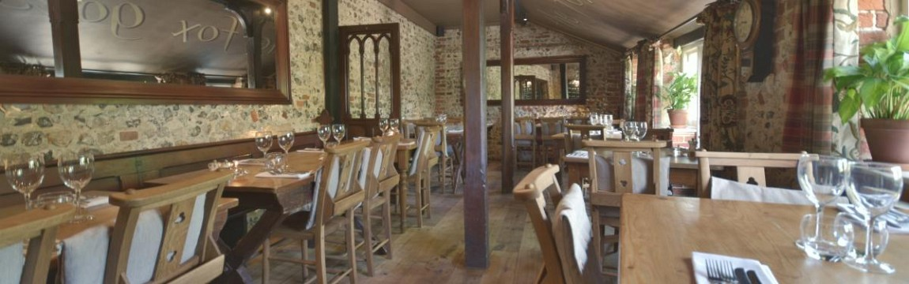This was my first run in the TC for 2019. It was a cold and grey day on Wednesday 23rd when I set off just after eleven o'clock so I put the hood up. The sun came out en route, but it stayed cold. Nineteen people met at the pub and we had a good lunch and natter. There and back was a total of 52 miles and the TC ran well, in spite of using petrol contaminated with diesel.
Nymans for Lunch, February
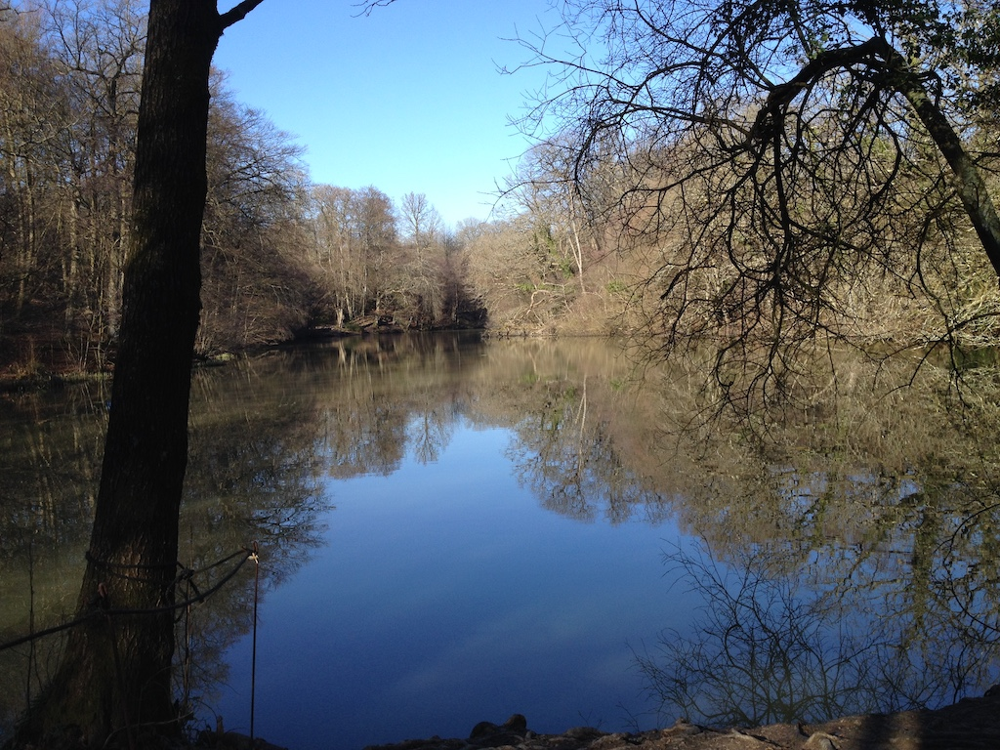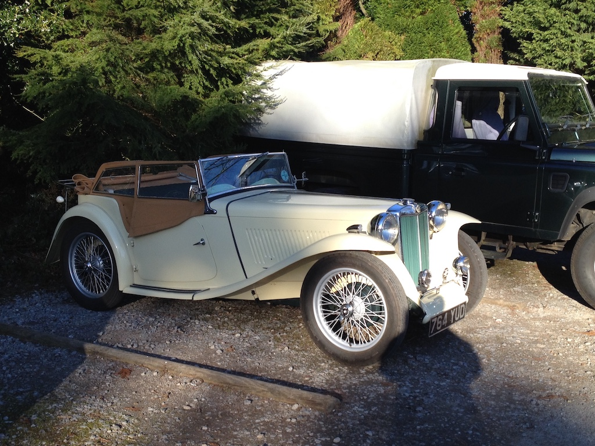Having got the engine to run, even with a small amount of diesel still in the tank, we took a trip to Nymans on Friday 15th. As you can see from the photo it was a beautiful day, so we had lunch and then went for a walk in the woods. The round trip was 36 miles and the car ran well. We arrived home at twenty to four, after a good day out.
WSMGOC Pub Run to the Bat & Ball, February
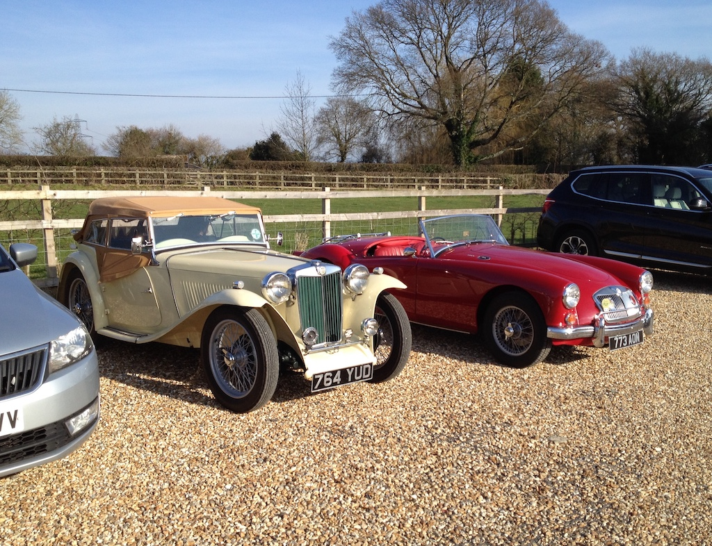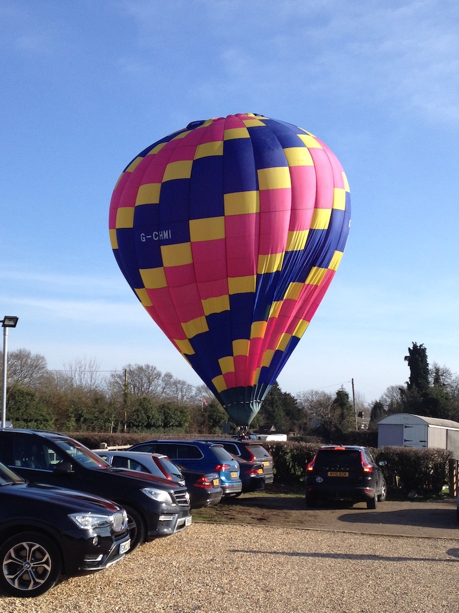It was a grey, misty start to the day on Friday 22nd. Angela walked down to the butchers and the library before we set off in the MG. She delivered some paper flowers that she had made while I put some petrol in the tank. We then drove to Billingshurt, to the Bat & Ball for the WSMGOC pub run. While we were there th sun came out.
It was a good meal and interesting company. As we were leaving so a hot air balloon was inflated and launched from the field adjacent to the car park. We all then went 100 yards down the road to Milestone Classics to look around their garage. Of the 15+ cars, some were sold, some for sale and some being worked on. It was a good day out, but a surprisingly short run at only 34 miles.
Sussex Wanderers Lunch, March - Dial Post
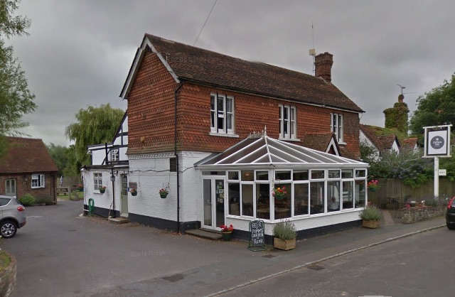The Sussex Wanderers don't usually meet until April, but by popular request it was decided to meet for lunch, rather than a full run. There were about 50 people, mostly arriving in non-MGs, but, although quite windy, it was dry with intermittent sunshine. So I took the TC. We had lunch at The Crown in Dial Post on Wednesday 13th. Consequently I was on my own, but I didn't need a navigator, Dial Post is only ten miles away, so I only did 20 miles all together. Leaving home just before twelve and getting back at three o'clock made for quite a good little outing. The TC was much admired.
WSMGOC Pub Run to the Friar's Oak at Hassocks
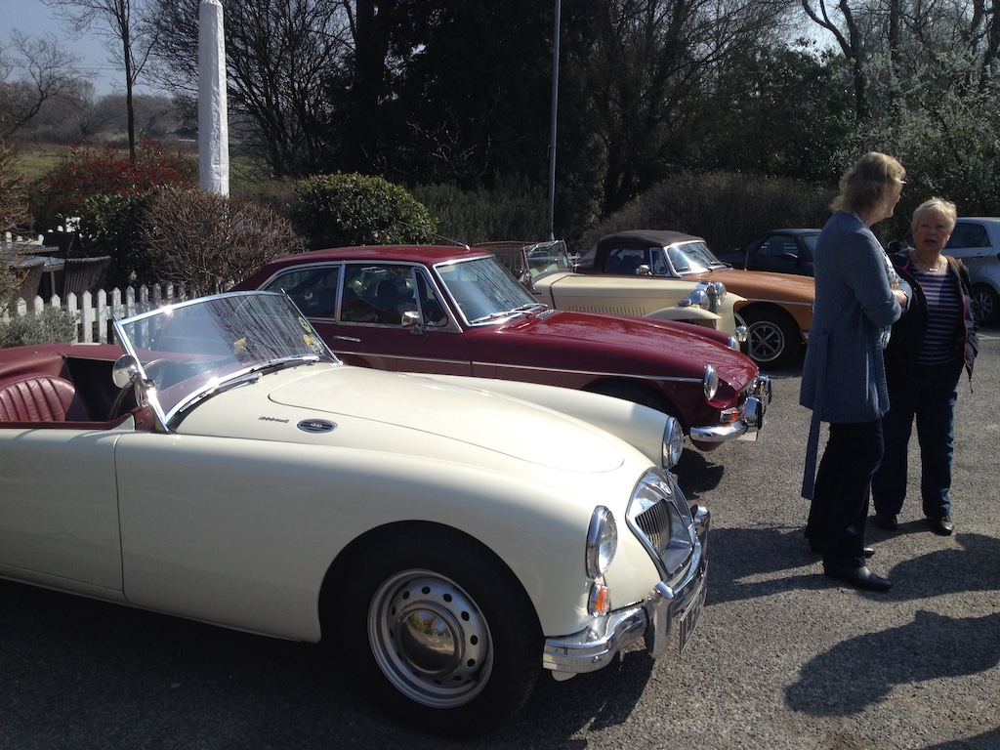Friday 29th March was a gloriously sunny and quite warm day, ideal for a run with the roof down. There were a few people at the pub when I arrived and we stood in the car park, in the sunshine, until most of the others had arrived. There was a good selection of MGs.
I'd not ordered a meal, but the pub had lost the list, so we all had to wait a while. Our 'mens' table was quite lively and a good time was had by all. It was another fine run home, along the back of the Downs through Fulking, with a total of 25 miles driven.
Sussex Wanderers, Barnes Green to Colgate
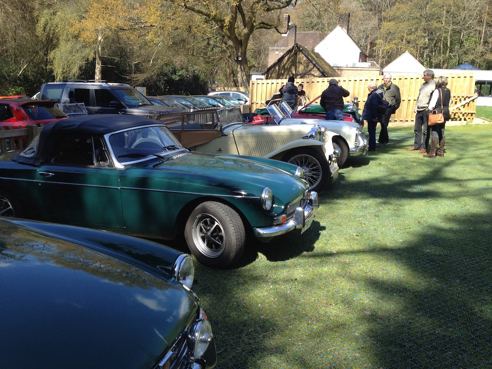The first Sussex Wanderers run of the year started at The Queen's Head at Barnes Green, near Horsham for coffee. I then followed another TC down through Ashington, towards Wiston and along Spithandle Lane through Ashurst and Partridge Green before going through Mannings Heath and on to The Dragon at Colgate, a small village south of Crawley. This photo shows some of the 20+ MGs in the car park. We had a good lunch, if a little chaotic. I returned home via Pease Pottage, Handcross and Henfield. I drove a total of 74 miles and got home at three o'clock. Although cold, it stayed dry and was sunny from lunchtime onwards.
Lunch at Amberly
It had been a while since TC4985 had been for a run. Apart from the one mile trip from Kingsmead Close to Penlands Vale when we moved house, we had not been for a run since the April Wanderers outing. Although there was a May run, the weather was so wet that we decided to take the Panda, which was a pity since it was a good run from Denmans Gardens at Fontwell to the Chichester Yacht club for lunch (and then a sunny drive home). Today, Tuesday 21st May, however, was a glorious summer's day and so after Angela's dental appointment we went to the Sportsman Inn at Amberly for lunch, via Storrington so that Angela could bank her WI cash. The round trip was 25 miles.
Floral Fringe, Amberly
 Last year we went to the Floral Fringe fair at Knepp Castle and enjoyed it. This year it was held at the chalk pits museum at Amberly, a place we have meant to visit since we lived in Sussex! I tried to register, so as to take in a classic car, but I was too late. As it happens it was better to park outside in a 'classic car' reserved area. Those who registered had to arrive early and stay all day. So on Saturday 1st June we drove to Amberly in the TC to visit the fair (as a birthday treat). It was a glorious summer's day, so we took a picnic, sitting in the shade towards the end of the museum site. We didn't think it was as good a site for the Floral Fringe as Knepp Castle, but we enjoyed being able to investigate the various exhibits and we had a ride on the narrow-gauge steam train that runs the length of the site. It would be a suitable place to take the grandchildren. Whilst there we met David Wright and Simon Keeble, both with their Jensens, and apparently missed other people that we knew. The round trip was 27 miles.
Last year we went to the Floral Fringe fair at Knepp Castle and enjoyed it. This year it was held at the chalk pits museum at Amberly, a place we have meant to visit since we lived in Sussex! I tried to register, so as to take in a classic car, but I was too late. As it happens it was better to park outside in a 'classic car' reserved area. Those who registered had to arrive early and stay all day. So on Saturday 1st June we drove to Amberly in the TC to visit the fair (as a birthday treat). It was a glorious summer's day, so we took a picnic, sitting in the shade towards the end of the museum site. We didn't think it was as good a site for the Floral Fringe as Knepp Castle, but we enjoyed being able to investigate the various exhibits and we had a ride on the narrow-gauge steam train that runs the length of the site. It would be a suitable place to take the grandchildren. Whilst there we met David Wright and Simon Keeble, both with their Jensens, and apparently missed other people that we knew. The round trip was 27 miles.
Sussex Wanderers, Bolney to Isfield
The Sussex Wanderers met on Wednesday June 12th at the Bolney Stage for coffee. There had been a few spots of rain on the way, but it was dry when we set off on the run. I was on my own again, so I followed a black Lotus Elise (they did not bring their green TC due to the forecast bad weather). They and another TC had lowered their hood, but both stopped to put them up en route. It started raining not long after the start, but we were about half way when the heavens opened! Unfortunately my wipers had stopped moving! The connection to the motor spindle had come loose so I couldn't even move them manually. Anyway, we got to the Laughing Fish at Isfield after quite an exciting run. Stuart Penfound had compiled the route, but was now in the Shetlands! After a good lunch it was still raining (and there was a good thunder clap), but I managed to tighten the nut. I took the 'easy' main road route home, although it was pouring with rain most of the way. The TC and I did 69 miles in all and I then spent some time drying it off. The seams of the hood still leak, so will need some more water proofing. Needless to say I didn't take any photos.
Denman's Gardens, Fontwell
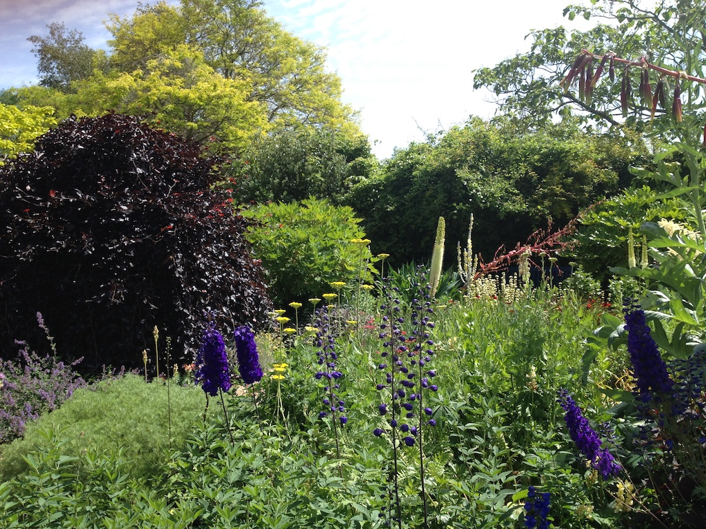Friday 28th June couldn't have been more different to the weather on my last outing. It was warm and mostly sunny all day. We also had nothing planned for the day. So we set off in the TC for Denman's Gardens next to Fontwell racecourse. After a stop for coffee in their cafe and a gentle walk around the gardens (which are not really very big) we were home just after one.
A slight smell of petrol suggests that there is still a leak around the carburetters, but looking at that might have to wait. Overall we did 44 miles. Short by the standards of other runs, but an enjoyable morning out.
Sussex Wanderers, Duncton to West Dean
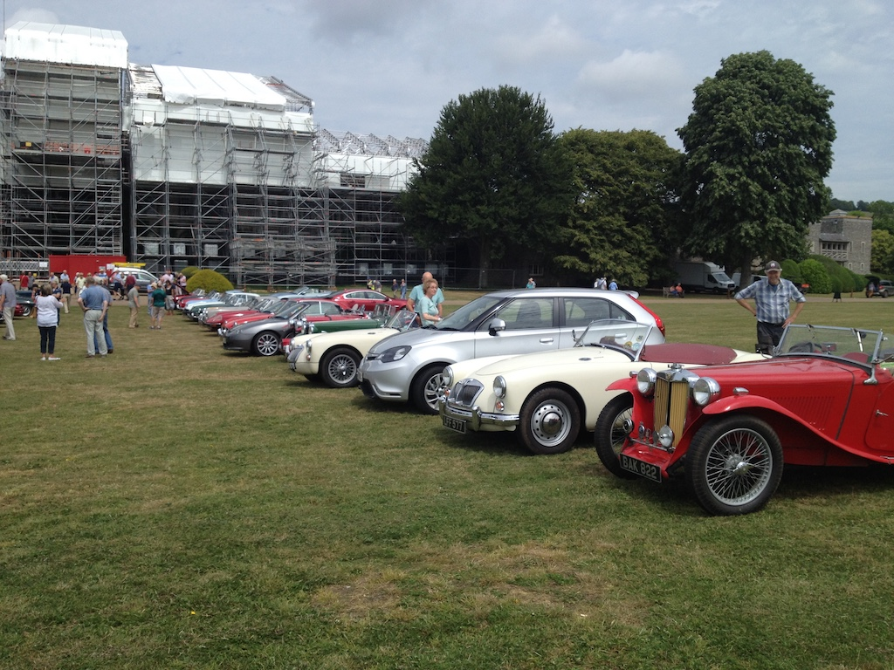This was something of a special Wanderers run, culminating in a buffet lunch in the old library at West Dean College on Wednesday 10th July. Seventy people sat down to lunch (the maximum number they could take) and, as you can see in the photo, the college is in the process of being re-roofed (at a cost of £6M so far).
This was David Farrer-Brown's first outing with the Wanderers. I picked him up from his home in Lyminster and then we drove to the Cricketer's Arms in Duncton. Fran and David had some German friends staying with them and he was very keen to see the TC, taking lots of photos.
Although the run itself was just over 20 miles, the total outing came to 92 miles, the furthest I've driven the TC on one day apart from the South Downs Run. David seemed to enjoy the outing and is keen to go on others, perhaps taking his modern TF, with me navigating.
Sussex Wanderers, Parham House
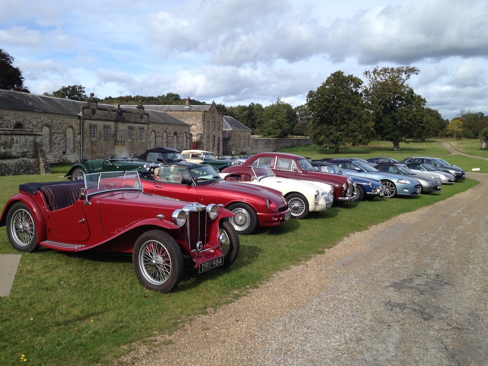I'd missed the August run because it was the day before we were flying to Davis. For the September run I only got as far as lunch (in the Panda). The TC sounded as though it was only running on three cylinders, but later I realised that it must have been a little diesel that had separated out of the fuel and had got through to the carburetters.
We had, though, taken the TC on a pub run to Bolney, to the Lyminster fete, to Camelia Botna and to Victoria Grand. On October 9th, however, the TC was running well and I drove it to Parham House. The run was a circular one, starting and ending at Parham. For the July run David F-B had navigated, so I arranged to meet him at Parham and then we did the run in his MG (modern TF). For the TC it was therefore only a short run of 19 miles. It was a fine, sunny day. So we could have the hood down.
Sussex Wanderers, Horsham to Goddards Green
Since it was a fine, sunny, if chilly morning, David F-B came over in his TF and we took the TC up through Small Dole and Henfield, then Cowfold to the Hornbrook Inn on the southern edge of Horsham. After coffee we headed south, coming back through Henfield and Small Dole, then going east through Fulking. We finished at the Sportsman Inn at Goddards Green after an enjoyable run. It had clouded over by the time we left and it was getting gloomy when we got back, even though it was before three. We did a total of 59 miles in the TC, a little less than the normal Wanderers outing.
WSMGOC Pub Run to the Wheatsheaf at Plummers Plain
On Friday 29th November Angela went off to Arundel to meet up with a school friend for lunch, so, since it was a sunny day, I took TC4985 the 16 miles to the Wheatsheaf at Plummers Plain, just south of Handcross. We didn't need to order our lunch beforehand, but with 23 club members sitting down for a meal they did very well. In fact, the food was good and it was a good outing. After the 32 miles round trip I got home at three o'clock, half an hour before Angela. The TC ran well.